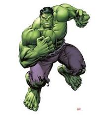
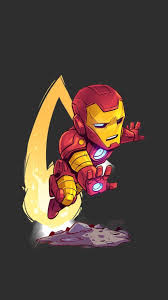
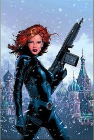
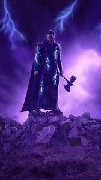
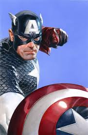

Descripción
Hulk
Trastorno de personalidad borderline: Bruce Banner muestra una gran inestabilidad emocional,
lo
que
le lleva a experimentar cambios de humor bruscos y a tener dificultades para controlar su
ira.
- Miedo a perder el control: Bruce Banner tiene un gran miedo a perder el control y a
convertirse en
el Hulk, lo que le lleva a sentirse ansioso y estresado.
- Inteligencia y creatividad: Bruce Banner es una persona muy inteligente y creativa, lo que
le
permite desarrollar soluciones innovadoras para los problemas que enfrenta.

Iron man
Trastorno de personalidad narcisista: Tony Stark muestra una gran confianza en sí mismo,
una necesidad de admiración y una falta de empatía hacia los demás.
- Inteligencia superior: Tony Stark es extremadamente inteligente y creativo, lo que le
permite desarrollar tecnologías avanzadas y resolver problemas complejos.
- Mecanismos de defensa: Tony Stark utiliza su humor y su sarcasmo como mecanismos de
defensa para evitar mostrar sus verdaderos sentimientos y vulnerabilidades.

La viuda negra
Trastorno de personalidad antisocial: Natasha Romanoff muestra una gran falta de empatía y
remordimiento, lo que le permite realizar misiones peligrosas y tomar decisiones difíciles
sin sentir culpa.
- Disciplina y control: Natasha Romanoff es una persona muy disciplinada y controlada, lo
que le
permite mantener su compostura en situaciones de estrés y peligro.
- Lealtad: Natasha Romanoff es una persona muy leal a sus amigos y aliados, y está dispuesta
a hacer cualquier cosa para protegerlos.

Thor
Trastorno de personalidad histriónica: Thor muestra una gran necesidad de atención y
admiración, lo
que le lleva a comportarse de manera dramática y llamativa.
- Confianza en sí mismo: Thor tiene una gran confianza en sí mismo y en sus habilidades, lo
que le permite enfrentar desafíos y peligros con valentía.
- Lealtad: Thor es una persona muy leal a sus amigos y familiares, y está dispuesto a hacer
cualquier cosa para protegerlos.

Capitan america
- Personalidad tipo A: Steve Rogers es una persona muy motivada, disciplinada y
perfeccionista, lo que le permite mantener su compromiso con la justicia y la moralidad.
- Altruismo: Steve Rogers es una persona muy altruista, dispuesta a sacrificar su propia
vida por el bien de los demás.
Sentido de responsabilidad: Steve Rogers se siente responsable de proteger a los inocentes
y de defender la justicia, lo que le da un sentido de propósito y dirección.
